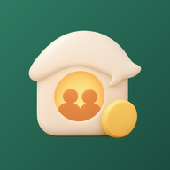

도란 가족 연결
가족 가계부에 초대받았어요.
도란을 여는 중
앱이 열리면 연결이 바로 이어져요. 열리지 않으면 아래 버튼을 눌러 주세요.
먼저 도란을 설치해 주세요
설치한 뒤 이 화면으로 돌아와 마지막 버튼을 누르면 가족 가계부에 그대로 연결돼요.
- 설치 파일을 받아요. Android 10 이상이면 돼요. 도란 받기 (APK)
- 받은 파일을 열어 설치해요. "출처를 알 수 없는 앱"을 물으면 이번 설치에만 허용해 주세요. 그 뒤 업데이트는 도란이 알아서 해요.
- 이 화면으로 돌아와 눌러요. 브라우저 탭에 그대로 남아 있어요. 설치했어요 · 연결 계속하기
연결한 뒤 도란이 알림 접근을 물어요. 켜 두면 이 폰에 오는 카드·은행 알림이 가족 가계부로 가요. "제한된 설정"이라며 막히면 설정 → 애플리케이션 → 도란 → 오른쪽 위 ⋮ → 제한된 설정 허용 뒤 다시 켜 주세요.
초대는 만든 뒤 30분 동안, 한 번만 쓸 수 있어요. 시간이 지났으면 가족에게 새 QR·링크를 부탁해 주세요.
도란은 Android 전용이에요
카드·은행 알림을 자동으로 읽으려면 Android가 필요해요(iPhone은 다른 앱의 알림을 읽을 수 없어요). Android 폰의 카메라로 이 QR을 다시 찍어 주세요.
연결 정보가 없는 링크예요
가족 폰의 도란 → 가족 → 초대에서 QR을 다시 띄워 달라고 해 주세요.
연결 정보는 주소의 # 뒤에만 있어서 이 웹 서버로 전송되지 않아요.